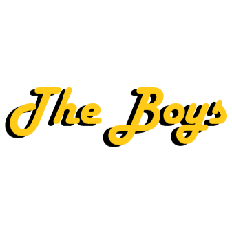
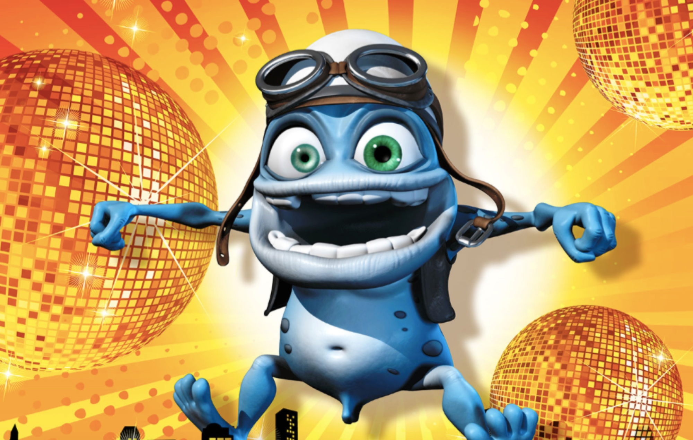
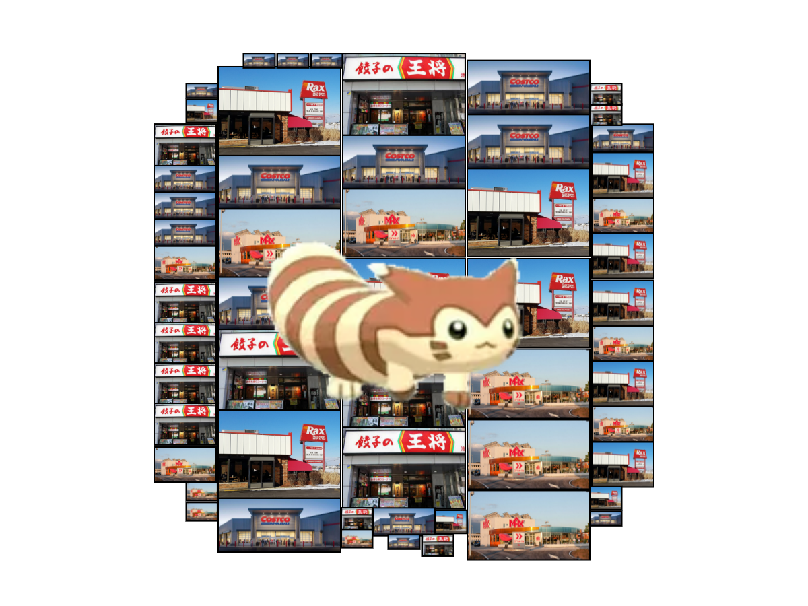

| The Boys International | |
|---|---|
|

Current base logo of all The Boys groups.
|
|
| Established | 2021 (The Boys), 21 March 2022 (first server), 2024 (first spinoff), 2025 (Chat 3) |
| Origin | The Schlobby, Elizabethtown, PA, USA |
| Years active | 2021-present |
| Leader | None |
| Notable shenanigans | See list of shenanigans |
| Notable people | See list of The Boys International members |
The Boys International, also known as The Boys Extended Universe, is a group of zany motherfuckers, queens, and Neil Divins formed in 2024 following the expansion of The Boys via The Boys Japan. The Boys Internatinal has since spread to three continents, with primary groups based in The US, Japan, and Sweden. Functionally, even outside of established groups, The Boys International consists of all those elligible to join Chat 3.
Originally, The Boys were formed in late 2021 when the original Boys decided to make a text chat. The Boys soon grew in shenanigans and scale to a point beyond basic text messages and formed a Discord server.

With multiple members moving to Japan, The Boys Japan was formed in early 2024 as a spin-off of the original group. Originally intended as a stand-alone spin-off, Boys Japan member Andrew's increasing presence among the stories and online shenanigans of the core group led to its general perception as a subgroup.
The Boys Sweden formed in 2025 following Kevin's departure from and Cameron Impostor's moving to Sweden. Functionally acting as the sister group, the formation of The Boys Sweden both set the precedent of The Boys existing outside of Discord and led to the more centralized nature of The Boys International. This standard was set with the continuation of shenanigans from The Boys, open communication between group members, and the creation of Chat 3.

Chat 3, formed in December of 2025, acted as the total consolodation of The Boys as one overall group, rather than several smaller ones. All individuals noted as being sufficiently close to the group are elligible to join Chat 3, making it functionally the sole metric on who is considered a member of The Boys on a meta level. Chat 3 hosts three primary languages, its own Autism Party, and a myriad of events not held on the original server.
{kind=link}